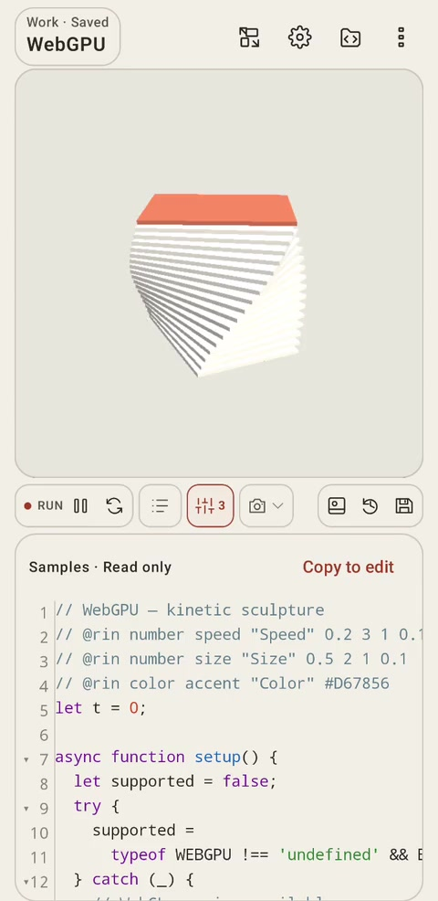

操作の場所、手順、コード例を機能ごとにまとめています。目次から章を選ぶか、機能名で検索してください。Find controls, step-by-step instructions, and code examples for each feature. Choose a chapter or search for a feature.
01 / 10
作品の作成・取り込みCreate & import
サンプルを開くところから、自分の作品とテンプレートの管理まで。Open samples, make your own works, and bring in existing projects.

1234
画面の読み方SCREEN MAP
作品とコードを同じ画面でArtwork and code together
作品名：作品一覧を開くWork title: open the work picker
歯車：アプリの設定Gear: app settings
プレビュー操作：パラメーター・出力などPreview controls: parameters, export, and more
コード欄：ソースの閲覧と編集Editor: read and edit source
画面例。版、言語、画面の向きや設定で配置は変わります。Example screen. Layout varies with version, language, orientation, and settings.
サンプルを開き、コピーして編集するOpen a sample and make an editable copy
既存のコードや作品一式を端末のファイルから取り込みます。Bring existing code or a complete work in from a file.
開く場所WHERE
JS：作品メニュー → JSをインポート／設定 → 保存 → Import .js、ZIP：作品メニュー → 作品ZIPを追加JS: Work menu → Import JS / Settings → Save → Import .js; ZIP: Work menu → Import work ZIP
操作手順STEPS
コードだけなら.js、補助ファイルや素材も移すなら作品ZIPを用意します。Use .js for code alone, or a work ZIP for files and assets as well.
該当するインポート操作からファイルを選びます。Choose the appropriate import action and select the file.
取り込んだ作品を開き、実行環境と素材のパスを確認して実行します。Open the imported work, check runtime and asset paths, and run it.
操作後RESULT取り込んだ内容をアプリ内で編集できます。The imported content becomes available for editing.
p5.js Web Editorの公開作品を取り込むImport public p5.js Web Editor sketches
コードの再実行と、描画の一時停止を使い分けます。Choose when to rerun code and when to pause drawing.
開く場所WHERE
実行操作・AUTOボタン／設定 → 画面と実行 → 作品切替時に自動実行Run controls & AUTO button / Settings → Display and run → Run when switching works
操作手順STEPS
コードを変更し、手動の場合は「変更を実行」を押します。Edit the code and choose Run changes when running manually.
AUTO（Auto-Run）を有効にすると入力が止まった後に再実行し、「作品切替時に自動実行」では別の作品を開いたときに自動で実行します。Enable AUTO (Auto-Run) to rerun after typing pauses; enable Run when switching works to run automatically when opening another work.
アニメーションを止めたいときは一時停止し、再開します。Use Pause and Resume to inspect an animation.
操作後RESULT再実行では最新のコードを読み込み、一時停止では描画の進行を止めます。Rerunning loads the latest code; pausing stops drawing progression.
p5.js 2.3.4・直径を書き換えて再実行p5.js 2.3.4 · edit the diameter and rerun
let diameter = 100;
function setup() {
createCanvas(400, 280);
}
function draw() {
background('#F1F1EA');
noStroke();
fill('#B85338');
circle(200, 140, diameter);
}
コードを実行LIVE CODE上のコード例をブラウザーで描画Runs the example above in your browser
実行で開始します。停止・初期化できます。パラメーターとウォッチは、この例専用の補助処理でアプリの連携を再現します。Press Run to start; stop or reset at any time. Example-specific helpers reproduce parameter and watch integration.
確認したい単純な宣言・代入・式の行末に //? または // ? を付けます。Append //? or // ? to a simple declaration, assignment, or expression.
実行し、値のバッジを確認します。変化を追う場合はdraw()内の行を使います。Run the work and inspect the badge. Use a line in draw() to watch changes.
操作後RESULT行が実行されるたびに、表示する値を更新します。The displayed value updates when the line executes.
p5.js 2.3.4・実行する行の値を確認p5.js 2.3.4 · inspect the executed line
function setup() { createCanvas(400, 280); }
function draw() {
background('#F1F1EA');
noStroke();
fill('#B85338');
let x = 200 + sin(frameCount * 0.03) * 100; //?
circle(x, 140, 60);
}
コードを実行LIVE CODE上のコード例をブラウザーで描画Runs the example above in your browser
実行で開始します。停止・初期化できます。パラメーターとウォッチは、この例専用の補助処理でアプリの連携を再現します。Press Run to start; stop or reset at any time. Example-specific helpers reproduce parameter and watch integration.
数値は@slider(最小, 最大, 刻み)または@int(最小, 最大)を指定します。Use @slider(min, max, step) or @int(min, max) for numbers.
色は@color、真偽値は@toggle、列挙値は@choice(...)を指定します。Use @color for colors, @toggle for booleans, and @choice(...) for choices.
実行後に操作パネルを開き、値を動かして結果を見ます。Run the work, open the parameter panel, and adjust the controls.
操作後RESULTソース内の値と実行中の変数を変更できます。The source value and the running variable can be updated.
p5.js 2.3.4・インライン形式の全5種類p5.js 2.3.4 · all five inline control types
let size = 100; // @slider(20, 200, 10) "Size"
let count = 3; // @int(1, 6) "Count"
let ink = '#B85338'; // @color "Ink"
let moving = false; // @toggle "Rotate"
let shape = 'circle'; // @choice(circle, square, triangle) "Shape"
function setup() { createCanvas(400, 280); }
function draw() {
background('#F1F1EA');
translate(200, 140);
if (moving) rotate(frameCount * 0.015);
noStroke();
fill(ink);
for (let i = 0; i < count; i++) {
push();
rotate(TWO_PI * i / count);
translate(count === 1 ? 0 : 65, 0);
if (shape === 'circle') circle(0, 0, size);
else if (shape === 'square') { rectMode(CENTER); square(0, 0, size); }
else triangle(0, -size / 2, size / 2, size / 2, -size / 2, size / 2);
pop();
}
}
コードを実行LIVE CODE上のコード例をブラウザーで描画Runs the example above in your browser
実行で開始します。停止・初期化できます。パラメーターとウォッチは、この例専用の補助処理でアプリの連携を再現します。Press Run to start; stop or reset at any time. Example-specific helpers reproduce parameter and watch integration.
実行すると、ここに描画します。Run the example to draw here.
未実行Not started
@rinとrinParamsで操作パネルを作るBuild controls with @rin and rinParams
// @rin 種類 名前 "表示名" 値 の形式で項目を書きます。Write each control as // @rin type name "Label" values.
numberは最小・最大・初期値・刻み、choiceは初期値と選択肢を指定します。For number, specify min, max, default, and step; for choice, specify the default and choices.
描画コードでrinParams.名前を読み、パネルから値を変更します。Read rinParams.name in the drawing code and adjust the panel.
操作後RESULT作品ごとの操作パネルで描画を調整できます。値は作品のコピーやバックアップにも含まれます。Each work has its own controls. Values are included in copies and backups.
p5.js 2.3.4・@rin形式の4種類p5.js 2.3.4 · all four @rin types
// @rin number size "Size" 20 200 100 10
// @rin number count "Count" 1 6 3 1
// @rin color ink "Ink" #B85338
// @rin boolean moving "Rotate" false
// @rin choice shape "Shape" circle circle square triangle
function setup() { createCanvas(400, 280); }
function draw() {
background('#F1F1EA');
translate(200, 140);
if (rinParams.moving) rotate(frameCount * 0.015);
noStroke();
fill(rinParams.ink);
for (let i = 0; i < rinParams.count; i++) {
push();
rotate(TWO_PI * i / rinParams.count);
translate(rinParams.count === 1 ? 0 : 65, 0);
let s = rinParams.size;
if (rinParams.shape === 'circle') circle(0, 0, s);
else if (rinParams.shape === 'square') { rectMode(CENTER); square(0, 0, s); }
else triangle(0, -s / 2, s / 2, s / 2, -s / 2, s / 2);
pop();
}
}
コードを実行LIVE CODE上のコード例をブラウザーで描画Runs the example above in your browser
実行で開始します。停止・初期化できます。パラメーターとウォッチは、この例専用の補助処理でアプリの連携を再現します。Press Run to start; stop or reset at any time. Example-specific helpers reproduce parameter and watch integration.
実行すると、ここに描画します。Run the example to draw here.
未実行Not started
宣言の条件と表示されない場合Declaration rules and missing controls
HTML作品では開始HTML、モジュール作品では開始モジュールを指定します。Choose the HTML entry document or the module entry.
通常JSではファイル順と外部HTTPSライブラリの順序を指定します。外部ライブラリは通常JS／モジュールを選べます。HTMLではscriptタグを使います。Set file order and external HTTPS library order for classic JS. External libraries can be classic scripts or modules. In HTML, use script tags.
モジュールのimportには相対パス、URL、またはHTMLのimport mapを使います。Use relative paths, URLs, or an HTML import map for module imports.
操作後RESULT設定はedit-rin.jsonにも保存されます。The configuration is also stored in edit-rin.json.
lib/math.mjsを追加Add lib/math.mjs
export const diameter = 120;
開始モジュール：main.mjsModule entry: main.mjs
import { diameter } from './lib/math.mjs';
window.setup = function () { createCanvas(400, 280); };
window.draw = function () {
background(242);
circle(200, 140, diameter);
};
ファイル数・容量・読み込みの制約File counts, sizes, and loading limits
setup()でキャンバスを作り、draw()で描画を繰り返します。Create a canvas in setup() and draw repeatedly in draw().
開く場所WHERE
新規作成 → 2D／アニメーションCreate work → 2D / Animation
操作手順STEPS
2Dテンプレートから作品を作成します。Create a work from the 2D template.
createCanvas()、background()、circle()などを編集します。Edit calls such as createCanvas(), background(), and circle().
実行し、frameCountを使って位置や色を変えます。Run it and use frameCount to vary position or color.
操作後RESULTコードの値と描画の関係を確かめられます。You can observe the relation between source values and drawing.
p5.js 2.3.4・追加ライブラリ不要p5.js 2.3.4 · no additional libraries
function setup() {
createCanvas(400, 280);
}
function draw() {
background('#F1F1EA');
noStroke();
fill('#B85338');
let x = 200 + sin(frameCount * 0.025) * 100;
circle(x, 140, 70);
}
コードを実行LIVE CODE上のコード例をブラウザーで描画Runs the example above in your browser
実行で開始します。停止・初期化できます。パラメーターとウォッチは、この例専用の補助処理でアプリの連携を再現します。Press Run to start; stop or reset at any time. Example-specific helpers reproduce parameter and watch integration.
WEBGLでは3D描画、Matter.jsでは2D物理演算を使えます。Use WEBGL for 3D and Matter.js for 2D physics.
開く場所WHERE
新規作成 → WebGL／物理演算テンプレートCreate work → WebGL / physics template
操作手順STEPS
WebGLテンプレートでcreateCanvas(..., WEBGL)を確認します。Inspect createCanvas(..., WEBGL) in a WebGL template.
物理演算ではMatter.jsを有効にし、物体と床をワールドへ追加します。For physics, enable Matter.js and add a body and floor to the world.
実行し、回転や重力の変化を確認します。Run the work and inspect rotation or gravity.
操作後RESULT3Dの描画と、物理演算による位置の更新を確認できます。Observe 3D drawing and positions updated by a physics engine.
p5.js 2.3.4・WEBGLp5.js 2.3.4 · WEBGL
function setup() { createCanvas(400, 280, WEBGL); }
function draw() {
background('#F1F1EA');
rotateX(frameCount * 0.008);
rotateY(frameCount * 0.012);
normalMaterial();
box(110);
}
コードを実行LIVE CODE上のコード例をブラウザーで描画Runs the example above in your browser
実行で開始します。停止・初期化できます。パラメーターとウォッチは、この例専用の補助処理でアプリの連携を再現します。Press Run to start; stop or reset at any time. Example-specific helpers reproduce parameter and watch integration.
コードを実行LIVE CODE上のコード例をブラウザーで描画Runs the example above in your browser
実行で開始します。停止・初期化できます。パラメーターとウォッチは、この例専用の補助処理でアプリの連携を再現します。Press Run to start; stop or reset at any time. Example-specific helpers reproduce parameter and watch integration.
コードを実行LIVE CODE上のコード例をブラウザーで描画Runs the example above in your browser
実行で開始します。停止・初期化できます。パラメーターとウォッチは、この例専用の補助処理でアプリの連携を再現します。Press Run to start; stop or reset at any time. Example-specific helpers reproduce parameter and watch integration.
プレビューの操作を、作品のイベントと座標として利用できます。Use preview interactions as events and coordinates in the work.
開く場所WHERE
新規作成 → マウス／タッチCreate work → Mouse / Touch
操作手順STEPS
mouseX・mouseY、またはtouchesから座標を読みます。Read coordinates from mouseX / mouseY or touches.
mousePressed()・touchStarted()などでタップ時の処理を書きます。Handle presses or taps in mousePressed() or touchStarted().
外付けキーボードを使う作品では、入力フォーカスとkeyPressed()も確認します。For an external keyboard, check input focus and keyPressed().
操作後RESULT入力に応じて位置や色を変える作品を作れます。Create works that change position or color in response to input.
p5.js 2.3.4・キャンバスを操作p5.js 2.3.4 · interact with the canvas
let ink = '#B85338';
function setup() { createCanvas(400, 280); }
function draw() {
background('#F1F1EA');
noStroke(); fill(ink);
circle(mouseX, mouseY, 70);
}
function mousePressed() { ink = ink === '#B85338' ? '#426B5D' : '#B85338'; }
function touchStarted() { mousePressed(); return false; }
コードを実行LIVE CODE上のコード例をブラウザーで描画Runs the example above in your browser
実行で開始します。停止・初期化できます。パラメーターとウォッチは、この例専用の補助処理でアプリの連携を再現します。Press Run to start; stop or reset at any time. Example-specific helpers reproduce parameter and watch integration.
起きている症状から、確認する設定と説明へ進めます。Start from a symptom to find settings and relevant instructions.
開く場所WHERE
ログ／設定／該当機能の説明Log / Settings / the relevant feature instructions
操作手順STEPS
変更が出ない場合は実行操作とAuto-Run、エラー時はログの最初の行を確認します。For stale output, check Run changes and Auto-Run. For errors, read the first log entry.
音声はp5.sound・版・開始操作、カメラとマイクはAndroidの権限を確認します。For audio, check p5.sound, version, and start gesture. For camera and microphone, check Android permissions.
保存失敗時は編集内容を残し、再試行や復旧の案内に従います。For failed saves, keep the editor content and follow retry or recovery guidance.
操作後RESULT原因に関係する項目を順番に確認できます。Check the relevant areas in sequence.
症状Symptom
最初に確認することFirst checks
変更が反映されないPreview is stale
変更を実行／Auto-RunRun changes / Auto-Run
パラメーターが出ないMissing parameter
コメントの書式・重複・合計16個の上限Comment syntax, duplicates, combined limit of 16
バッジが更新されないBadge does not update
ウォッチ設定・対象行が実行されるかWatch setting and whether the line executes